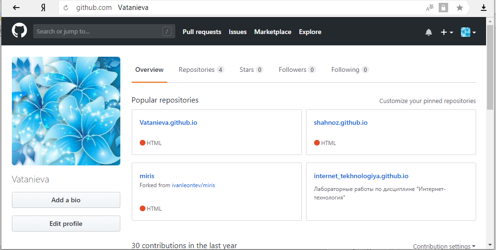

Лабораторная работа №1
"Экосистема разработки программ с открытым кодом"
Задачи:
1. Создание персональной страницы-отчета на github
2. Работа с git
Отчет по ЛР №1
Моя страничка на Github

Ссылка на моей страничке
Ссылка
Работа с git
Основы работы с Git
Лабораторная работа №2
"Разработка простого веб-приложения"
Задачи:
1. Проектирование и разработка индивидуального или коллективного веб-приложения с использованием html,css,js + json,xml
2. В виде статья написать ответ на одного из экзаменационных билетов на wiki-странице
Отчет по ЛР №2
1. Website
Ссылка
2. Ссылка на статья
Ссылка
Лабораторная работа №3
"Настройка локальной сети передачи данных"
Задачи:
1. Разместить на рабочем поле коммутатор и два компьютера и соединить их.
2. Подключить консольный кабель для настройки оборудования.
3. Настроить адресацию на добавленных компьютерах согласно таблице ниже без шлюза по умолчанию.
4. Выполнить проверку работоспособности сети.
5. Добавить на рабочее поле еще один коммутатор с двумя компьютерами и настроить адресацию из другой подсети.
6. Соединить коммутаторы между собой и проверить работоспособность сети.
7. В случае неработоспособности сети объяснить причины.
8. Добавить маршрутизатор на рабочее поле.
9. Настроить интерфейсы маршрутизатора для существующих подсетей.
10.Проверить работоспособность сети.
11. В случае неработоспособности сети объяснить причины.
12. Указать шлюз по умолчанию и отправить сообщение.
13. Добавить на рабочее поле еще один маршрутизатор.
14. Подключить к нему коммутатор и компьютер.
15. Настроить сетевые настройки согласно таблице ниже.
16. Соединить между маршрутизаторы и настроить между ними сеть с префиксом /30.
17. Проверить работоспособность сети, отправив сообщение сети A в сеть С и из сети В в сеть С.
18. В случае неработоспособности сети объяснить причины.
19. Настроить статическую маршрутизацию между сетями.
20. Настроить на сетевых устройствах пароли для привилегированного режима.
21. Настроить пароли на сетевых устройствах пароли на подключение через консоль и telnet.
22. Установить баннер на сетевое оборудование.
23. Проверить работу удаленного подключения.
Отчет по ЛР №3
1. Лаба № 3
Ссылка